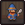
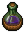
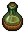
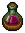
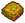
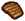

Insanity
Insanity is one of the resources of the Keeper. Insanity is gained by performing certain actions, such as eating flesh or working in the Graveyard. Each point of Insanity reduces the maximum  Energy by 1. The maximum amount of Insanity is 80, or 70 with the
Energy by 1. The maximum amount of Insanity is 80, or 70 with the
Insanity can only be reduced by sleeping while affected by Lack of Sleep, consuming certain foods, or writing stories.
Reduce insanity
| Item | Insanity |
|---|---|
| -35 (gold) | |
| -30 (silver) | |
| -25 (bronze) | |
| -12 | |
 Blueberry Cider |
-10 |
| Mead | -10 |
 Apple Cider |
-7 |
 Berry Cider |
-7 |
Gain insanity
| Item | Insanity |
|---|---|
| +1 | |
 Lasagna |
+1 |
| +5 | |
| +5 | |
 Baked meat |
+10 |
| +10 | |
| +20 |